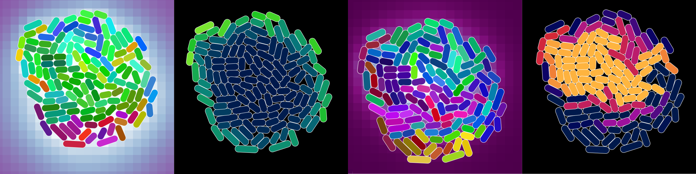

Covert Lab

Image adapted from
vivarium_lacy.png,
which was added to the Vivarium Core repository by Eran Agmon. It shows
a colony of cells undergoing a glucose-lactose shift simulated by
Vivarium. From left to right,
the snapshots show environmental glucose concentrations, glucose flux
for each cell, environmental lactose concentrations, and LacY
concentration in each cell.
{kind=link}
Papers
-
I used Vivarium to create an agent-based model of a colony of Escherichia coli where each cell was modeled by a snapshot from the Covert Lab’s Whole-Cell Modeling Project. This produced the first “whole-colony” model. A manuscript presenting my work is currently in review and available on BioRxiv:
Skalnik, C. J., Agmon, E., Spangler, R. K., Talman, L., Morrison, J. H., Peirce, S. M., & Covert, M. W. (2021). Whole-Colony Modeling of Escherichia coli. BioRxiv, 2021.04.27.441666. DOI: 10.1101/2021.04.27.441666
-
Vivarium is a tool for composing and simulating integrative, multiscale models that I help develop. Check out its documentation to learn more! A manuscript documenting this tool is currently in review and available on BioRxiv:
Agmon, E., Spangler, R. K., Skalnik, C. J., Poole, W., Peirce, S. M., Morrison, J. H., & Covert, M. W. (2021). Vivarium: An interface and engine for integrative multiscale modeling in computational biology. BioRxiv, 2021.04.27.441657. DOI: 10.1101/2021.04.27.441657
Software
-
Vivarium is developed in the open on GitHub at vivarium-collective/vivarium-core. Take a look at the Vivarium Collective to see what people are building with Vivarium.
-
The analysis code for my “Whole-Colony Modeling of Escherichia coli” paper is available on GitHub at CovertLab/wcecoli-colony-analysis. The scripts in this repository can reproduce the statistics and figures in the manuscript.